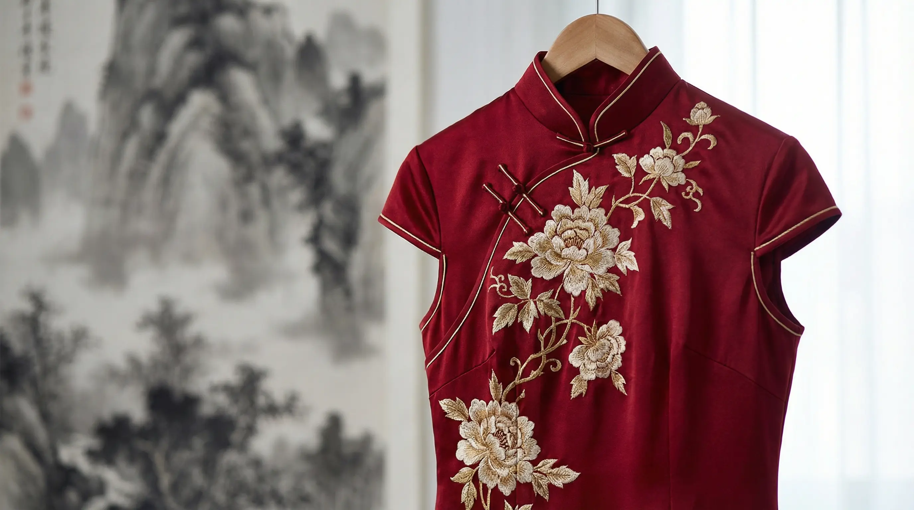
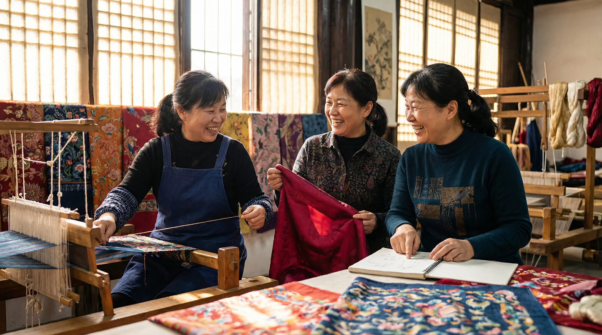
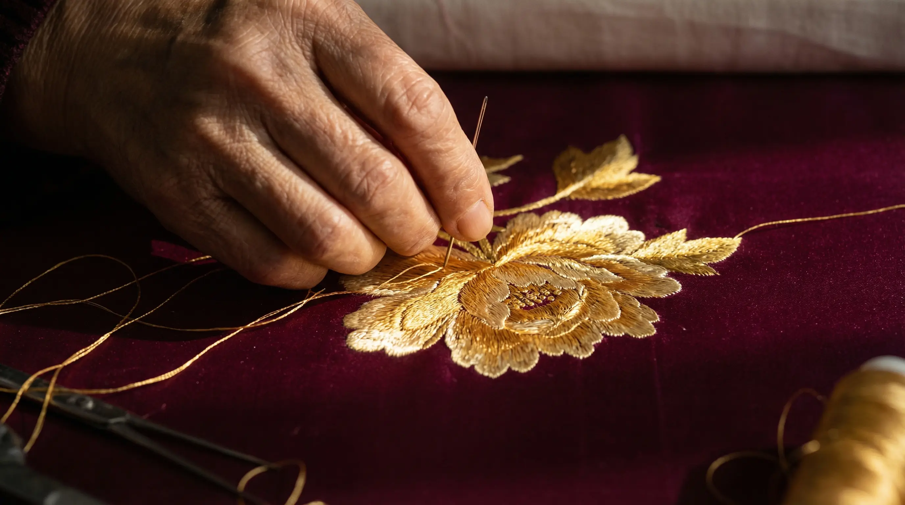

东方有衣，锦绣成裳
衣不在华，适体为美
千年织锦的基因，以现代的姿态重新生长。每一件衣裳，都是传统与当代的一次对话。

苏州镇湖，丝绸之乡。沈家三姐妹自幼跟随外婆学习苏绣。2019年，三人在祖宅的织坊里创办了锦绣坊，让苏绣从画框走进衣橱。
"外婆说，绣花要静心，做衣裳也是。"
改良旗袍 | 苏绣点缀
传统立领与A字裙摆，真丝面料，手工苏绣牡丹。
¥1,688 起
新中式外套 | 盘扣设计
手工盘扣，对襟设计，桑蚕丝混纺面料。
¥888 起
国风配饰 | 手工缠花
非遗缠花工艺，蚕丝线手工缠绕。
¥388 起

穿在身上的文化，
活在当下的传统
From Suzhou Gardens to City Streets
以针为笔，以丝为墨，织就东方新韵
Made with MK Slide